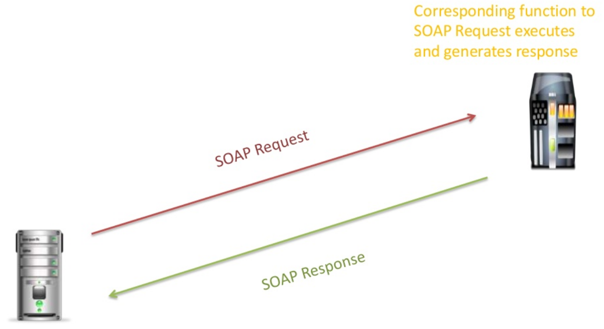
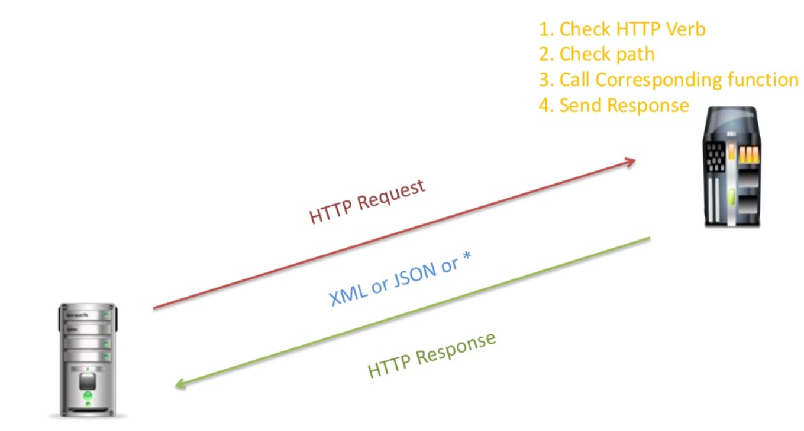

Web Services (SOAP, REST)
F28WP Web Programming
2020-2021
## Overview * **Web Services** * What do we mean by Web Services? * What is **SOAP** and **REST**? * Limitations and comparison * Questions and discussion
## Revision Question Fix the bug ``` function getMessageText() { return $('#message').innerHTML(); } document.body.text = '<div id="message">The message</div>'; console.log(getMessageText()); ```
## Answer **innerHTML** and **text** (used incorrectly) ``` function getMessageText() { return $('#message').text(); } document.body.innerHTML = '<div id="message">The message</div>'; console.log(getMessageText()); ```
## Revision Question Which of the following is AngularJS: * a) Library * b) Toolkit * c) Framework * d) Operating System
## Answer **c)** Framework
## Revision Question Which of the following is jQuery: * a) Library * b) Toolkit * c) Framework * d) Operating System
## Answer **a)** Library
## Revision Question What does MVC stand for? * a) Model View Controller * b) Message Verification Certificate * c) Model Vender Certified * d) Main View Control
## Answer **a)** Model View Controller Model-View-Controller (MVC) is a design pattern for separating an application into three main logical components
## What are Web Services?
## What are Web Services? * Web services are **applications** that allow for **communication** over the internet * There are a number of **protocols** for web services to communicate - Simple Object Access Protocol(**SOAP**) - Representational State Transfer (**REST**)
## Why are web services **important**?
## Web Services * Allows **different** applications to communicate * Standard **data-exchange format** * Many Web Applications provide a web service access to their resources * Can enrich web apps by resources offered by web services
## Web services * Many types of applications and users * Many types of devices * Challenges of data syncing * More users == more business
## Do web services provide **User Interfaces**?
## Do web services provide User Interfaces? **NO** Web services **do not** provide UIs as they are not meant to be used by human end users
## What web services are **available**?
## Web Services Solutions 1. A non-standard hacky way and implications 2. **SOAP** - Simple Object Access Protocol 3. **REST** - REpresentational State Transfer
## When do web services become important? (data exchange increases in complexity)
# What is SOAP?
## SOAP * SOAP stands for **Simple Object Access Protocol** * SOAP is a **standard** for web-services **access protocol** * SOAP messages are encoded in a common XML format * Can use different protocols to transport a SOAP message - HTTP, FTP, BEEP, ...
## SOAP : How it Works  **Simple Object Access Protocol (SOAP)**
## SOAP Details * SOAP is a **protocol** * Only support **XML** format * Versatile * **Powerful/Complex** * Automated tools exist * Often seen as **Verbose**
# What is REST? **RE**presentational **S**tate **T**ransfer
## REST * Is an **architectural approach** for distributed systems * Have 6 guiding constraints including: - **Client-Server**, **Stateless**, **Uniform Interface**, ... * Information is abstracted as **resource** identified by a URI (Uniform Resource Identifiers) - document, image, service, collection of other resources,... * Different **representations** for a resource are possible: XML, JSON, PDF, JPEG, ... * Another concept is **resource methods** to perform transition - a popular choice is HTTP GET/PUT/POST/DELETE
## REST : How it Works  <!-- **REpresentational State Transfer (REST)** -->
## REST Details * Uses **HTTP** methods * Directory like structure * Uses proper MIME types * Human readable result * **Lightweight** * **Easy** to build (no toolkits required)
# What is a **REST**ful Web Service?
## What is a **REST**ful Web Service? * RESTful web service (i.e., web service that is created and accessed using **REST principles**) * use **HTTP** protocol methods for operations * For example, **HTTP methods** (post,get,put,delete) to manage **operations**
## Key Principles of REST * Everything is a **resource** * Every resource is identified by a **unique identifier** * Uses a simple and uniform interface * **Stateless**
## REST **or** SOAP Web Service * REST exposes **resources** that represent data, while SOAP exposes **operations** that represent logic * REST emphasises **simple p2p** communication, while SOAP emphasises **loosly coupled** distributed message * REST supports **multiple data formates**, while SOAP encodes everything in XML with data attachments * REST emphasises **stateless communication** while SOAP supports stateless and stateful operations * REST is **lightweight** compared to SOAP * REST depends on other security approaches (e.g., oAuth)
## Summary * Understand basic Web Service **concepts** * Why web services are important - **Communication** * Whats and Whys of **SOAP** and **REST**
## To do this week ... * Read over the lectures * Review the revision questions * Work through tutorial practicals * **Experiment** (get into good habits) * **Coursework**